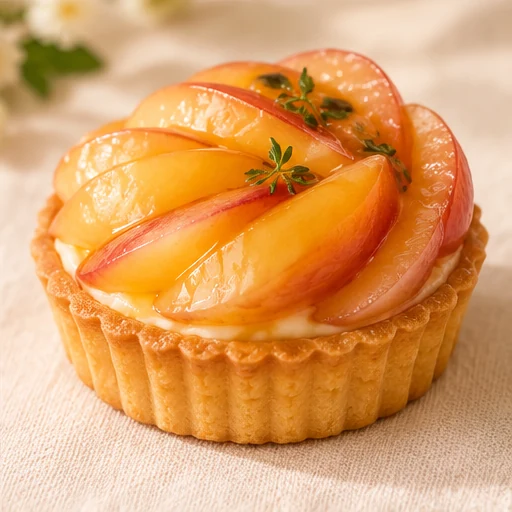

Our little bakery
ความตั้งใจที่อยู่ในทุกชิ้น
เราเชื่อว่าขนมที่ดีเริ่มจากวัตถุดิบที่ดี ทาร์ตทุกชิ้นของ Crust&Cream จึงตั้งใจทำด้วยแป้งทาร์ตหอมเนย ครีมสูตรหวานน้อย และผลไม้สดที่เลือกให้เข้ากันในแต่ละฤดูกาล
ดูเมนูทั้งหมดทาร์ตผลไม้โฮมเมด แป้งกรอบหอมเนย ครีมคัสตาร์ดวานิลลาหวานน้อย และผลไม้สดตามฤดูกาล

เราเชื่อว่าขนมที่ดีเริ่มจากวัตถุดิบที่ดี ทาร์ตทุกชิ้นของ Crust&Cream จึงตั้งใจทำด้วยแป้งทาร์ตหอมเนย ครีมสูตรหวานน้อย และผลไม้สดที่เลือกให้เข้ากันในแต่ละฤดูกาล
ดูเมนูทั้งหมด